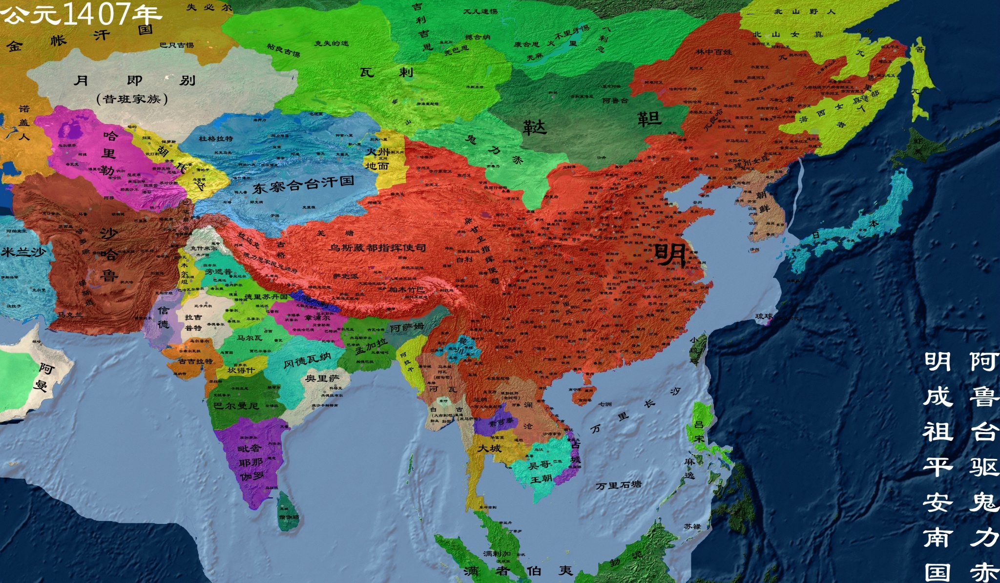

明朝
明朝（1368－1644年）是中国历史上一个由汉族建立的大一统王朝，极盛时期国土面积约达1000万平方公里，历经十二世，共十六位皇帝，享国二百七十六年。 明朝是继汉唐之后强盛的大一统中原王朝。清修《明史》评价明朝为“治隆唐宋”、“远迈汉唐”。
【相关人物】
[朱元璋]
[朱棣]
[袁崇焕]
.......
[更多人物]
【相关书籍】
[明朝那些事儿]
.......
[更多书籍]

公元1368年，朱元璋建明
明朝（1368年―1644年），是中国历史上一个由汉族建立的王朝，初期建都南京，明成祖时期定都北京。传十六帝，共计276年。 元末爆发红巾起义，朱元璋加入郭子兴队伍。1364年称吴王，史称西吴。1368年初称帝，国号大明，定都于应天府
公元1405年 郑和下西洋
郑和下西洋是明代永乐、宣德年间的一场海上远航活动，首次航行始于永乐三年（1405年）， 末次航行结束于宣德八年（1433年），共计七次。由于使团正使由郑和担任，且船队航行至婆罗洲以西洋面（即明代所谓“西洋”），故名。
公元1596年 《本草纲目》
《本草纲目》，本草著作，52卷。明代李时珍(东璧)撰于嘉靖三十一年(1552年)至万历六年(1578年)， 稿凡三易。此书采用“目随纲举”编写体例，故以“纲目”名书。以《证类本草》为蓝本加以变革。
公元1618年 七大恨
“七大恨”为明末后金政权君主努尔哈赤发布的讨明檄文。 天命三年（万历四十六年，1618 年）正月，努尔哈赤对诸贝勒宣布：“吾意已决，今岁必征大明国！”，四月十三日以七大恨告天，起兵反明。
公元1623年 魏忠贤为东厂长官
魏忠贤（1568年－1627年12月11日），字完吾，北直隶肃宁（今河北沧州肃宁县）人， 汉族，明朝末期宦官。自宫后改姓名叫李进忠，由才人王氏复姓，出任秉笔太监后，改回原姓， 皇帝赐名为魏忠贤。明熹宗时期，出任司礼秉笔太监，极受宠信，被称为“九千九百岁”，排除异己， 专断国政，以致人们“只知有忠贤，而不知有皇上”。
公元1636年 皇太极称帝，建清
清太宗爱新觉罗·皇太极（1592年11月28日-1643年9月21日），又译黄台吉。 清太祖爱新觉罗·努尔哈赤第八子，清初杰出的军事家、政治家，后金大汗、蒙古大汗、清朝开国皇帝。